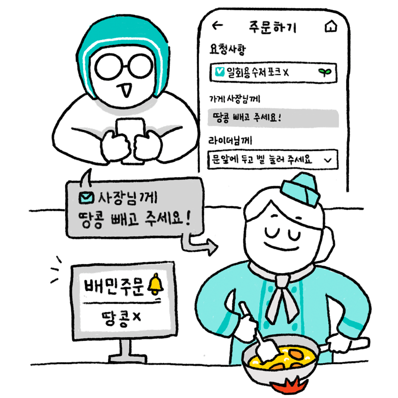
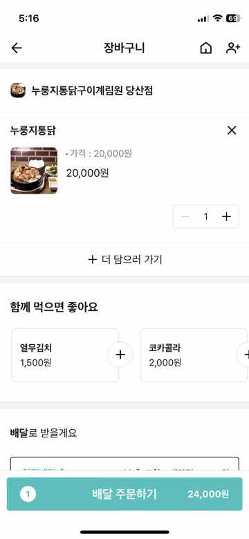
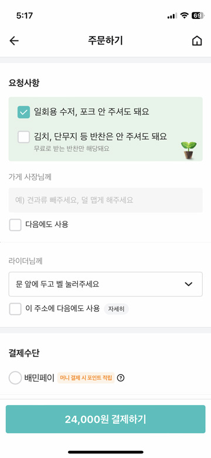

싫어하는 음식은 빼달라고 하고 싶어!
가게 사장님께 메시지를 보내서 원하는 것을 말하면 사장님이 메시지를 보고 부탁을 들어줍니다. 필요한 것이 있다면 주문하기 전에 가게 사장님께 부탁해보세요. *들어주기 어려운 부탁은 사장님이 들어주지 못할 수도 있습니다. 알레르기가 있는 재료를 빼달라고 할 때 싫어하는 재료를 빼달라고 할 때 가게 사장님에게 부탁하고 싶은 것이 있을 때
가게 사장님께
이럴 때 사용해봐요!
가게 사장님께 이렇게 사용해보세요!
1주문하고 싶은 가게에 들어가 먹고 싶은 메뉴를 장바구니에 담는다.

2장바구니에 담긴 음식을 확인하고 ‘배달 주문하기’를 누른다.
